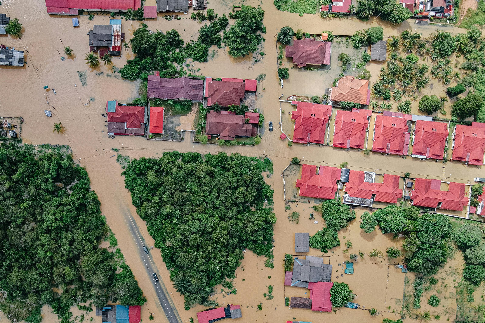
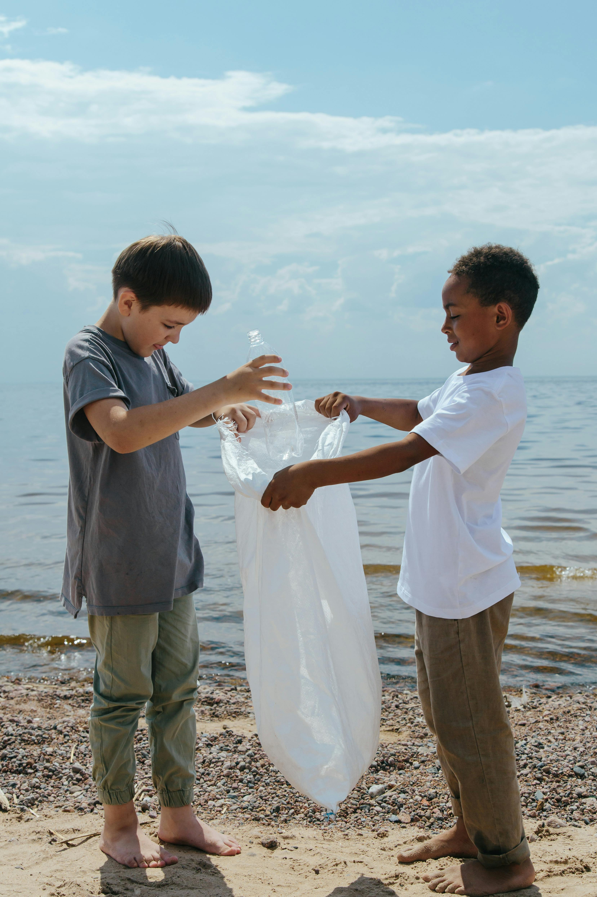

Com nosso aplicativo, a comunidade e sensores se unem para monitorar focos de resíduos e rios, gerando alertas precisos. Agimos rapidamente, valorizando o que era descarte para uma cidade mais segura e sustentável.
Problemas incluem falta de monitoramento de enchentes e prevenção de lixo em áreas de risco. Há má gestão de resíduos, com descarte irregular e sobrecarga de serviços.
Perdas econômicas e sociais: Enchentes causam prejuízos financeiros e impactos graves na saúde e segurança das populações vulneráveis.

.jpg)
.jpg)
.jpg)
.jpg)
.jpg)
Nosso aplicativo móvel intuitivo permite cidadãos enviarem dados com geolocalização e receberem alertas. Sensores IoT coletam dados de rios.
Uma infraestrutura de nuvem com IA processa dados de sensores e usuários para prever riscos e otimizar equipes.
.svg)
.svg)
.svg)
.svg)
.svg)
Moradores de áreas de risco e comunidades com drenagem deficiente sofrem diretamente com enchentes e lixo. Para eles, o alerta precoce é crucial. Cidadãos engajados e famílias buscando segurança encontram em nosso aplicativo um canal para agir, monitorar e receber avisos.
A EcoFlood eleva a segurança urbana com prevenção de enchentes e alertas precisos, melhorando saúde pública e qualidade de vida com ambientes mais limpos.
Ela promove sustentabilidade, reduzindo poluição e impulsionando a economia circular. Financeiramente autossustentável, otimiza recursos e engaja cidadãos ativamente.

Usuários recebem alertas de enchente no celular, ganhando tempo para proteção. Eles podem reportar lixo, criando ambientes mais limpos.
Isso previne entupimentos e alagamentos, garantindo menos interrupções. Usuários sentem participação e veem impacto direto na melhoria da cidade.
Fechar